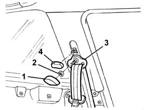
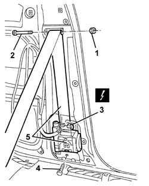
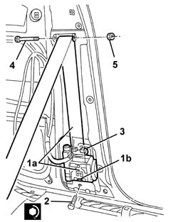
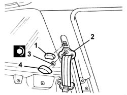
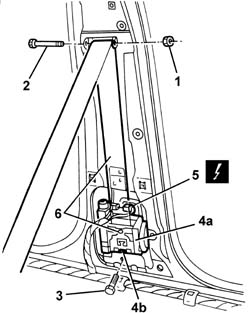
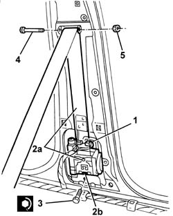

7065A12 front seat belt (one), lh or rh, with pretensioner on wheel - r r
- Path
- Procedures > 70 FITTINGS > 7065 SEAT BELTS AND ACCESSORIES > 7065A FRONT SEAT BELTS > 7065A12 front seat belt (one), lh or rh, with pretensioner on wheel - r r
- Kind
- repair procedure (removal / refitting; the operation number is the code)
- Applies to
- all engines; all production periods
- Interactive page
- https://sloeber94.github.io/elrnDB-a147/en/#/3025923
Applies to: all engines; all production periods
Applies to: all engines; all production periods; only with equipment: 3 porte
 Removing
Removing
 Refitting
Refitting7040L40 front compartment scuff strip - r r
7050A22 rear seat cushion - r+r
1. Remove the embellishment.
2. Undo the nut.
3. Move the seat belt mechanism.
4. Remove the knob.

Applies to: all engines; all production periods; only with equipment: 3 porte
1. Undo the nut.
2. Remove the pin and release the seat belt.
3. Disconnect the electrical connection from the pretensioner.
 | Name | Connector |
|---|---|---|
3 | Driver's seat belt pre-tensioner |
| Name | Connector |
|---|---|---|
3 | Front passenger seat belt pretensioner |
4. Unscrew the bolt.
5. Remove the seat belt with pretensioner.

Applies to: all engines; all production periods; only with equipment: 3 porte
Place the pretensioenr in the special cabinet, resting it on a free surface.
Applies to: all engines; all production periods; only with equipment: 3 porte
Refitting
Removing1. Refit the pretensioner (1a), making sure that seat (1b) connects to the corresponding body retainer.
2. Tighten the bolt to the specified torque.
 | Fastening | Component | Ø | Value (daNm) |
|---|---|---|---|---|
2 | Bolt | FRONT SEAT BELT PRETENSIONER. | M7/16' | 4.0 |
3. Connect the electrical connection for the pretensioner.
4. Position the seat belt in its seat and insert the pin.
5. tighten the nut.

Applies to: all engines; all production periods; only with equipment: 3 porte
1. Fit the knob.
2. Fit the seat belt mechanism.
3. Tighten the nut to the specified torque.
| Fastening | Component | Ø | Value (daNm) |
|---|---|---|---|---|
3 | Nut | FRONT SEAT BELT IDLER | M7/16" | 4.0 |
4. Fit the trim.

Applies to: all engines; all production periods; only with equipment: 3 porte
7050A22 rear seat cushion - r+r
7040L40 front compartment scuff strip - r r
Check the operation of the system using the Examiner or the other diagnostic equipment.
Applies to: all engines; all production periods
Applies to: all engines; all production periods; only with equipment: 5 porte
Removing
Refitting7040H36 central trim lower element - r r
7040H38 central pillar upper element - r r
1. Undo the nut.
2. Remove the pin and release the seat belt.
3. Unscrew the bolt.
4. Move the pretensioner (4a) over slightly, releasing it from the retainers (4b).
5. Disconnect the electrical connections.
| Name | Connector |
|---|---|---|
5 | Driver's seat belt pre-tensioner |
| Name | Connector |
|---|---|---|
5 | Front passenger seat belt pretensioner |
6. Recover the seat belt with pretensioner.

Applies to: all engines; all production periods; only with equipment: 5 porte
Place the pretensioenr in the special cabinet, resting it on a free surface.
Applies to: all engines; all production periods; only with equipment: 5 porte
Refitting
Removing1. Connect the electrical connection for the pretensioner.
2. Refit the pretensioner (2a), engaging the retainers (2b) on the bodywork.
3. Tighten the bolt to the specified torque.
| Fastening | Component | Ø | Value (daNm) |
|---|---|---|---|---|
3 | Bolt | FRONT SEAT BELT PRETENSIONER. | M7/16' | 4.0 |
4. Position the seat belt in its seat and insert the pin.
5. Tighten the nut.

Applies to: all engines; all production periods; only with equipment: 5 porte
7040H38 central pillar upper element - r r
7040H36 central trim lower element - r r
Check the operation of the system using the Examiner or the other diagnostic equipment.
Topics linked from this page (8)
- 7040H36 central trim lower element - r r
- 7040H38 central pillar upper element - r r
- 7040H50 rear panel - r r
- 7040L40 front compartment scuff strip - r r
- 7050A22 rear seat cushion - r+r
- 7065A FRONT SEAT BELTS
- Q20 Driver's seat belt pre-tensioner
- Q21 Front passenger seat belt pretensioner